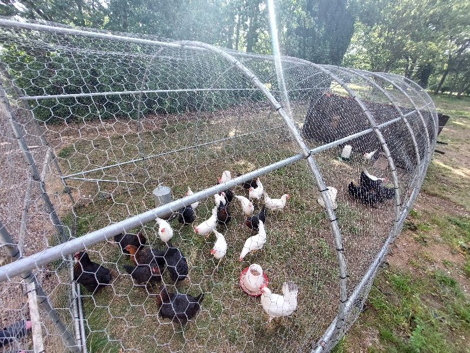

About our farm
Our farm was founded in 2021 to supply the local community with
eggs and this slowly developed from half a dozen hens where we are
now.
Our cages consist of 2 main cages for our hens. One of these is a
chicken tractor
and the other is part of a barn. Most of our hens are in the
chicken tractor as these get the most daylight due to a automatic
opening door and fresh pasture every other day to help them
display natural behaviour an supliment their diet. The hens that
are in our barn also have their own fixed enclosure and are
slightly more comfortable than the hens in the other cage so the
eldest and broody hens are put in this cage to care for them the
best.
More about our farm
We also have several cages for ill or injured hens
Our chickens get a mixture of food as we provide grain and layers pellets(which helps them lay strong large eggs) and the chickens also suppliment their diet with things they find
...